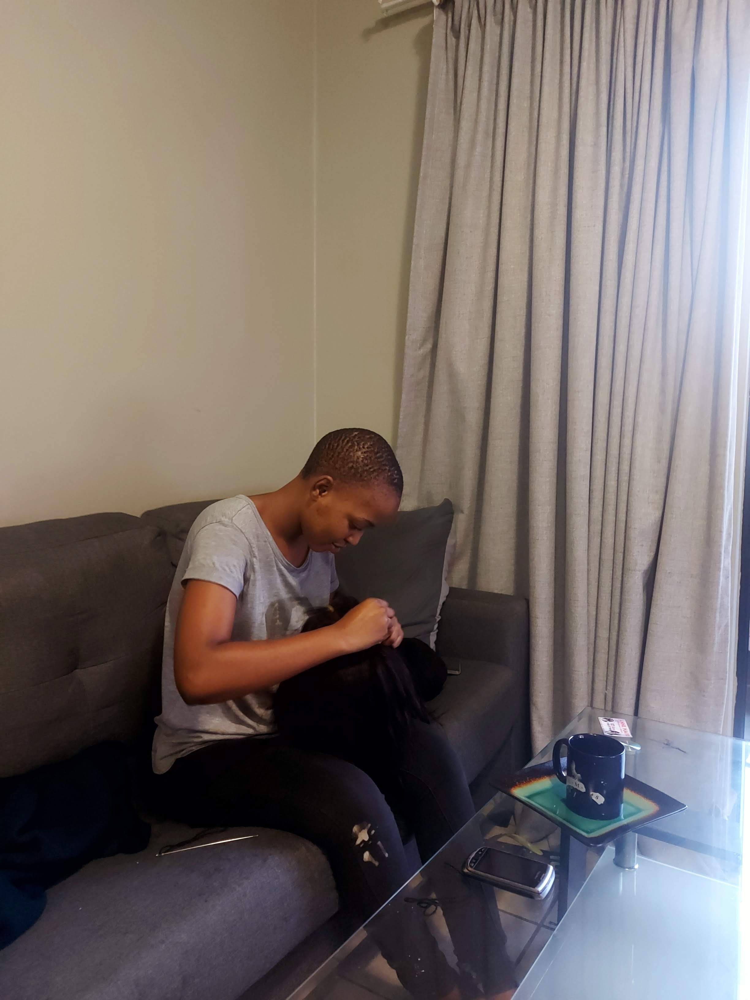

Intro

Hey there, I’m Dakalo. I turn coffee into code and wild ideas into
digital delights. When I’m not debugging my life choices, I’m
crafting clean, scalable solutions that make users say “Wow!”
instead of “Why…?”
I build everything from static and dynamic websites using HTML, CSS,
JavaScript, and GitHub Pages to mobile apps powered by React Native
and Node.js magic. Along the way, I sprinkle in Google AdSense, AI
video tricks, and custom automations, all while weaving storytelling
into interfaces so your users stay glued to the screen.
I debug life one line at a time (bugs tremble in fear), speak fluent
JavaScript—and just enough sarcasm to keep things interesting—and
treat deadlines as motivational suggestions rather than tyrannical
masters. If you’ve got a project that needs a pinch of creativity
and a dash of humor, drop me a line. Let’s turn your vision into
code (and maybe share a coffee along the way).
Work

These days I’m a Full Stack Engineer on Sage’s Distribution and
Manufacturing Operations team, where I help bring Sage Intacct’s
cloud finance manufacturing features to life. I whip up dynamic UIs
in TypeScript and React, tame data with GraphQL, spin Node.js
services into Docker containers, and shepherd deployments through
GitHub. Working across time zones, I keep order-management workflows
and real-time reporting dashboards humming along—faster than a
double-shot espresso cools down.
Before Sage, I was a Systems Developer at FutureSoft in Centurion,
enhancing Excalibur, their flagship debt-collection platform. I
translated business requirements into clean C# services, sculpted
responsive dashboards with JavaScript, Kendo UI, and Bootstrap, and
tuned MS SQL queries until they ran smoother than a perfectly
frothed cappuccino. From back-end batch processes to front-end user
analytics, I partnered with product owners to ship features on
schedule and to spec.
In my Sitecore developer chapter at NML in Cape Town, we rebuilt the
DirectAxis website on the latest CMS version and built “Pulse,” a
credit-score checking service powered by TransUnion and Sanlam APIs.
I handled everything from ASP.NET MVC and C# on the server side to
HTML, CSS, jQuery, and vanilla JavaScript on the client, then used
MongoDB to model user behavior and deliver personalized content that
keeps customers coming back for more.
My earliest gigs sharpened my problem-solving grit: as an Academy
Developer intern at NML, I dove into C#, MVC .NET, and JavaScript to
support client projects; at AIMSSEC I built a C# WinForms timetable
generator, maintained LANs/WANs, and taught IT fundamentals to
future educators; and at the University of Venda I tutored
foundation mathematics, helping students conquer algebraic puzzles
with patience—and the occasional corny math joke.
Across every role, I’ve expanded my toolkit—TypeScript, React,
Node.js, C#, ASP.NET MVC, GraphQL, MS SQL, PostgreSQL, MongoDB,
Docker, Sitecore, Copilot, and more—and learned that reliable code,
like reliable school lunches, keeps everyone happy. If you need a
front-to-back solution or a custom integration that just works,
let’s talk—espresso’s on me.
About
Hey there! I’m a caffeine-fueled full stack engineer with over eight
years of experience turning wild ideas into clean, scalable
solutions. I graduated Cum Laude with a BSc in Computer Science and
Mathematics, earned a Sitecore Professional Developer certification,
and collected more academic awards than I have semicolons in my
JavaScript files. When I’m not debating punctuation standards,
you’ll find me crafting cloud finance features at Sage or hunting
down the perfect espresso shot.
My toolkit spans the full stack: TypeScript, React, JavaScript,
HTML, CSS, Bootstrap, and Kendo UI on the frontend; Node.js, C#,
ASP.NET MVC, GraphQL, and REST APIs on the backend; and MS SQL,
PostgreSQL, and MongoDB taming data. Docker and GitHub keep
deployments smooth, while Sitecore, Copilot, and the Carbon design
system help deliver polished, enterprise-grade experiences.
Academically, I was honored as the top student in the School of
Mathematical and Natural Sciences and earned Vice-Chancellor’s
awards in 2013 and 2014. That same drive translated into
professional achievements—shipping features that connect to
TransUnion, Sanlam, and internal APIs, and architecting
debt-collection modules that balance reliability with razor-sharp
code quality.
When I’m off the clock, I’m geeking out over sci-fi novels,
experimenting with AI-generated videos, or plotting my next travel
adventure (because nothing sparks fresh ideas like a new city!). I
believe curiosity fuels innovation, and I bring that spark into
every project.
Ready to turn your bold idea into reality? Whether it’s a sleek
website, a React Native app, or an automation that saves you hours,
I’m your sidekick—espresso in hand. Send me an
email, shoot me a
WhatsApp, or connect on
LinkedIn
—and let’s build something awesome together.
Contact
Want to chat about a project, share ideas, or just say hi? I’m all
ears! You can reach me via email, WhatsApp, or LinkedIn. Let’s
connect and see how we can collaborate.